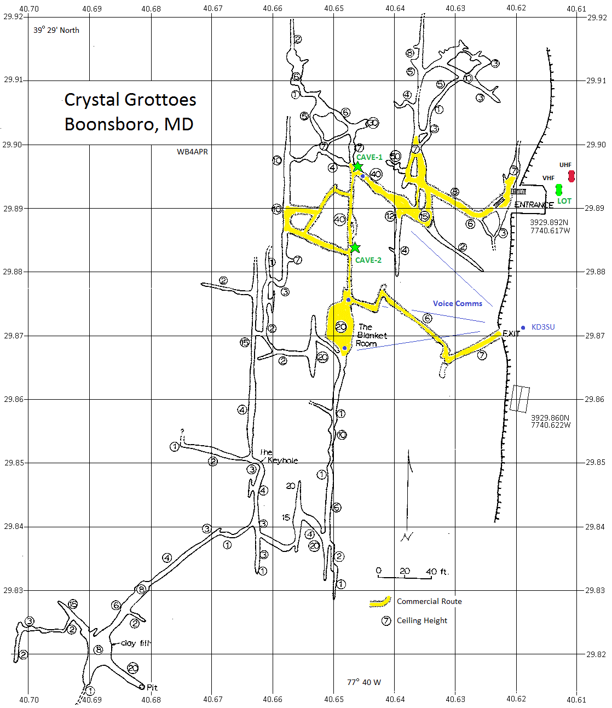
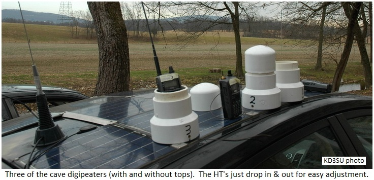
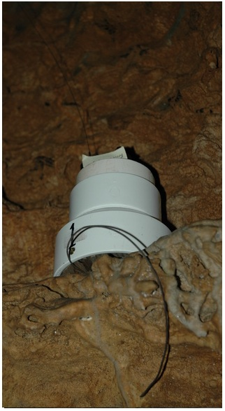
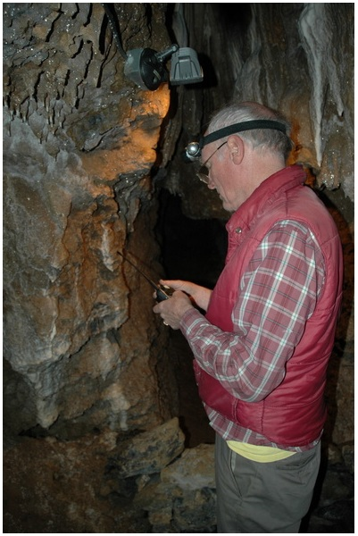
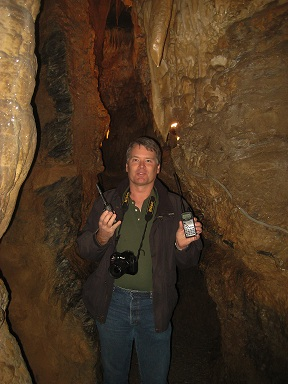

Crystal Grottoes APRS Radio Link Test
Crystal Grottoes APRS Radio Link Test
US Naval Academy Satellite Lab,
Bob Bruninga, WB4APR
bruninga@usna.edu
Crystal Grottoes APRS Radio Link Test
US Naval Academy Satellite Lab,
Bob Bruninga, WB4APR
bruninga@usna.edu
This is a preliminary test in support of the overall APRS Cave Link Radio System Concept
 Link Test 8 Dec 2012: To get an initial assessment of packet radio capability in caves, WB4APR and KD3SU (Greg) took 3 cave
link digipeaters into Crystal Grottoes Caverns near Boonsboro
Maryland. The test consisted of three Kenwood TH-D72 APRS Handi-Talkies(HT) (shown at right) which have a built-in RELAY capability, and two older D7 radios for the cavers which were
used for text messaging.
Link Test 8 Dec 2012: To get an initial assessment of packet radio capability in caves, WB4APR and KD3SU (Greg) took 3 cave
link digipeaters into Crystal Grottoes Caverns near Boonsboro
Maryland. The test consisted of three Kenwood TH-D72 APRS Handi-Talkies(HT) (shown at right) which have a built-in RELAY capability, and two older D7 radios for the cavers which were
used for text messaging.

Click 4 full size.
The map above shows the layout of the test in this small cave. This cave was chosen for its small passages while still having easy access for walking. It is a small "900 foot" cave but full of the most beautiful and continuous formations I have ever seen. Greg has an Album of photos and also his report on the same test.
 
Digipeater Placement: We parked our two cars very near the entrance, one beaconing on UHF and the other on VHF every 12 seconds. Then we paid entrance fee and went inside. The UHF was lost within the first tens of feet and so we turned it off. The VHF was strong more than 150' through 3 very acute bends (think "Z"'s) and two level changes. The passageway was between 2 to 4 feet wide, and 6 to 10' tall all that distance. Then we began to notice weak signals and found a ledge about 7 feet overhead where we could set our first TH-D72 digi (CAVE-1) and made another 120 degree acute turn. Down this long but straight passageway again from 2 o 4' wide but as high as 20' or more, we were shocked to lose the signal if we even made a 6 or 10 foot excursion off the straight path*. So, since we were again going to make another acute 120 degree turn toward the lake room, we dropped our second CAVE-2 digi near the juncture. This was less than 100' away from DIGI-1 but necessary to make the turn.
The rest of the cave passages were all within about 100' of this location and so we had solid coverage. Greg went back out of the cave and came around to the exit and we had VHF good voice contact through about 150' of again, acute switch-back passageways maybe 3 to 5' wide and 6 or 7' tall as shown with the blue dots on the map.
 Lessons learned:
 Frustrations and Risks:
 0) This was a narrow cave. See Greg in the photo at right. Clearly VHF (2 meters) won't do well
in this narrow of a waveguide.
0) This was a narrow cave. See Greg in the photo at right. Clearly VHF (2 meters) won't do well
in this narrow of a waveguide.
1) Trying to program 3 THD72 digis, 3 D7's and two D710's in a parking lot in 40 degree weather from their keyboards for this test was dumb (top photo on car roof). Chances are high that not all radios got set right. This is why we need lots of people who know their radios well and can each be responsible for their own settings. Every radio had to have ALL of these settings changed from normal:
2) Turning on the radios to test at the entrance was like a chain reaction. There was so much beeping we could not tell at all what was happening. Oh, also don't forget to enable the TNC! The plan was to just turn on one radio/digi at a time until signals were weak, place the radio as a digi, set its path and settings and then continue. But since the tour guide was responsible for us, and was on a limited schedule, this plan cannot work.
Photos including ones of the digis and a map of the cave will eventually get tot he web page. TO hold the HT digi's upright, I used a 4" to 3" PVC pipe adapter and a 3" pipe cap. The full size HT antenna poked up through a hole in the pipe cap, and the bottom oft he 4" adapter had a 3/4" thinck base. Inside was a ring of foam to hold the radio from banging around. A 19" counterpoise wire was screwed under the belt-clip screw and dangled out the bottom.
To make the digi's smaller and lighter, a second version was made out of only 3" pipe with a 1/2" wide collar (made from slicing a coupling) at the bottom to give it some additional base stabilty as shown here to the right.
In Greg's photos, the cave entrance is simply a 10' set of stairs from just inside the door of the building. You can also see the digi's, though we did not bother putting the top's on any of them since we had to have access to the digi keypad for fixing set-up errors. The big photo near the bottom is their biggest room, about 15-20' wide and maybe 12' high. The door at the bottom of Greg's page is the exit.
One of the digis, with its full size2m whip and 19" counterpoise would not hear packets that a standard D7 with rubber duck was hearing fine. It could have been a null, but I want to test ALL radios on Monday with a sig gen to make sure all were up to snuff.
Future Procedure: The ideal procedure for placing digis while proceeding into a cave is to man the previous digi until the next digi is placed. When signals to the new digi begin to get margingal, then the man at the first digi will hold down the PTT solid for 10 seconds at a time while the advance party uses their HT's and ears to find the hottest signal point. Reflections and nulls can vary by as much as 20 dB within only a foot or so, so it is important to not place a digi in a null area. Unfortunately, this method does not work in escorted or public tours where the digi team is unable to work independently.
Return To: the APRS Cave-Link home page
{kind=link}
{kind=link}